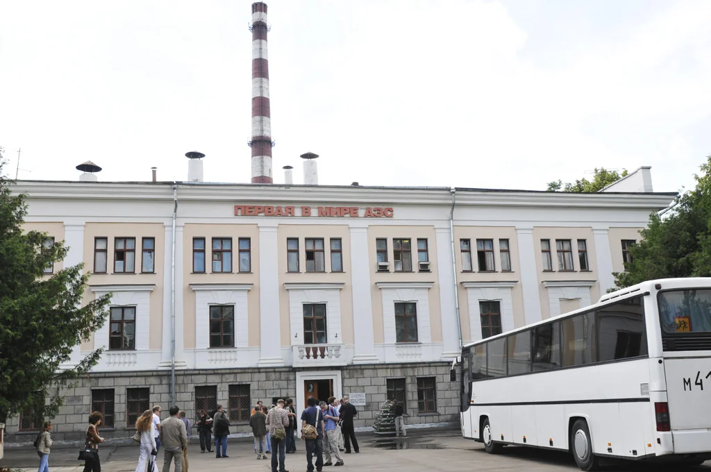
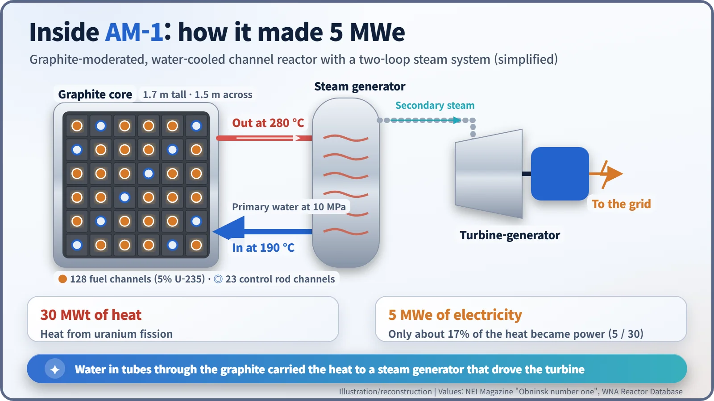
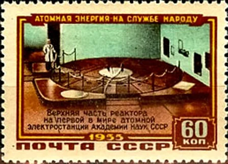
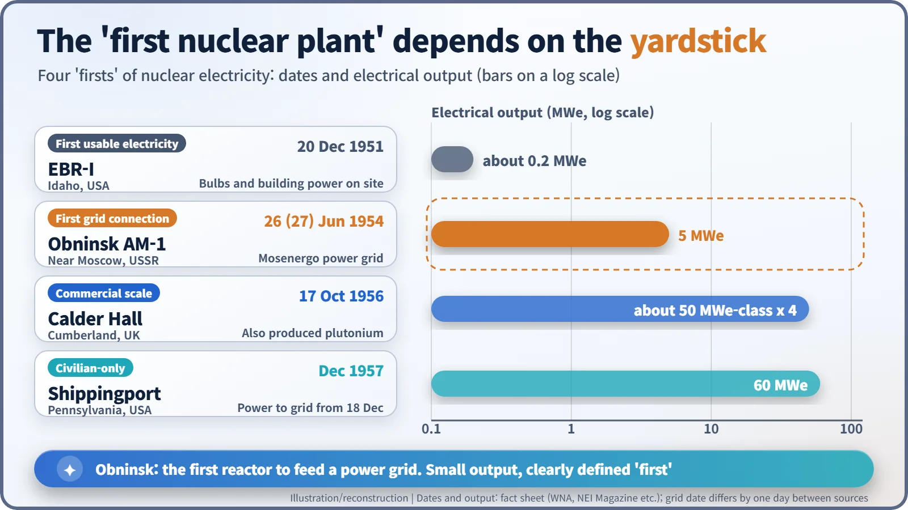

Nuclear History · 177
"World's First" on the Front Wall — Obninsk, the First Nuclear Reactor to Power a Grid (1954)
A graphite block threaded with water tubes made just 5 megawatts, but it put nuclear electricity on a grid first and then served 48 years as a test bed and school.
On 26 June 1954 (27 June in some sources), a small graphite-moderated reactor at Obninsk, near Moscow, became the first nuclear reactor to send electricity into a public power grid. Its 5 megawatts were modest, but the plant ran for 48 years as a test bed and training school before shutting down in 2002.
A sign on the front wall
About 110 km southwest of Moscow, in the science town of Obninsk, stands a three-storey building with a red-and-white striped chimney. Large letters run across its front: "Pervaya v mire AES", the world's first nuclear power plant. In June 1954 the reactor inside sent nuclear electricity into a public power grid for the first time anywhere. [1]

After the bomb, the homework was electricity
After its first nuclear test in 1949, the Soviet Union's physicists began pushing to make electricity from a reactor. In February 1950 they proposed an experimental station near Moscow with 30,000 kW of heat and 5,000 kW of electricity, and in May 1950 the USSR Council of Ministers approved it. Construction began in 1951 (sources give dates from 31 December 1950 to July 1951). [2] [3]
Scientific direction fell to Dmitry Blokhintsev (1908–1979), head of the local laboratory that is today the Institute of Physics and Power Engineering (IPPE). The reactor was designed by Nikolai Dollezhal (1899–2000), and Igor Kurchatov (1903–1960), scientific leader of the Soviet nuclear programme, oversaw the whole effort. [2]
Even the reactor's name has a story. According to a Russian-language account, "AM" first stood for atom morskoy, "the naval atom", a trace of interest in ship propulsion. Only later was it read as atom mirny: "the peaceful atom". [4]
Water threading through graphite
AM-1 looked nothing like the pressurised water reactors common today. Picture a graphite block 1.7 m tall and 1.5 m across, drilled through and fitted with metal tubes, or channels: 128 for fuel and 23 for control rods. The graphite was the moderator, slowing neutrons so that fission happens more readily; the water flowing through the tubes was the coolant, carrying the heat away. [2]
The water, held at about 100 atmospheres (10 MPa), entered at 190 °C and left at 280 °C. In a steam generator it boiled water in a separate loop, and that steam turned the turbine. The fuel was a uranium alloy enriched to 5% uranium-235. [2]

The reactor produced 30 MW of heat and 5 MW of electricity (net; 6 MW gross). Only about 17% of the heat became power. The aim was not efficiency; it was proof that it could be done. [1]
June 1954: a small white cloud
The reactor first went critical, meaning the fission chain reaction kept itself going, on the evening of 9 May 1954, according to Russian and IPPE-based accounts. Some English-language databases give 6 May or even 2 May. [1] [2] [3]
Then, on 26 June, steam from the reactor entered the turbine for the first time and the generator was connected to the Moscow regional grid, Mosenergo. The World Nuclear Association database and other sources give 27 June, so the record differs by a day. Blokhintsev later recalled, in the English rendering published by Rosatom: "A little white cloud of ordinary steam... seemed a miracle because it was the first steam ever generated by nuclear power." According to a story often told, when the steam hissed from the valve everyone hugged and traded the Russian after-the-bathhouse greeting S lyogkim parom!, roughly "enjoy your light steam!". Who said it first is not documented. [1] [3] [4]
The Soviet news agency TASS announced the plant at the end of June, and it reached full rated output in October 1954. In January 1956 the Soviet post office even issued a stamp showing the top of the reactor.

"World's first" needs a qualifier
So was Obninsk really the first nuclear power plant? That depends on the yardstick. In December 1951 the experimental reactor EBR-I in Idaho had already lit light bulbs and powered its own building with nuclear electricity, but it did not feed a grid. Calder Hall in Britain (1956) is counted as the start of commercial-scale nuclear power, and Shippingport in the United States (1957) as the first plant built purely for civilian power. Obninsk's title, precisely stated, is the first reactor to send electricity into a power grid.
| Yardstick | Plant | Date | Electrical output |
|---|---|---|---|
| First usable electricity (on site) | EBR-I, Idaho, USA | 20 Dec 1951 | about 0.2 MWe at rated power |
| First grid connection | Obninsk AM-1, USSR | 26 (27) Jun 1954 | 5 MWe |
| Commercial scale | Calder Hall, UK | 17 Oct 1956 | four reactors, each about 50 MWe-class |
| Civilian-only | Shippingport, USA | Dec 1957 | 60 MWe |

Five megawatts is small, but in the middle of the Cold War it was enough to say "we got to the peaceful atom first, too." When the Soviet delegation presented the plant at the Geneva conference in August 1955, Western visitors were impressed.
Forty-eight years as a school
The plant's real value showed later. With 17 experimental loops it tested fuel for later reactors and even for space reactors. Operators for the Beloyarsk and Novovoronezh power stations, crews for the nuclear icebreaker Lenin and for submarines, and specialists from China, East Germany and elsewhere learned their trade here. Early cracks and leaks in the tubes were fixed along the way and became experience, too. [2]
This "channel" design, water flowing through tubes in graphite, is often described as a forerunner of the large Soviet RBMK reactors, though sources differ on whether to call it a direct ancestor. [5]
The plant shut down for good on 29 April 2002, after 48 years, 18 years longer than planned; its operators say it never had an accident that harmed anyone. The building is now a museum, and the "world's first" lettering on its wall still carries no qualifier. [1] [3]